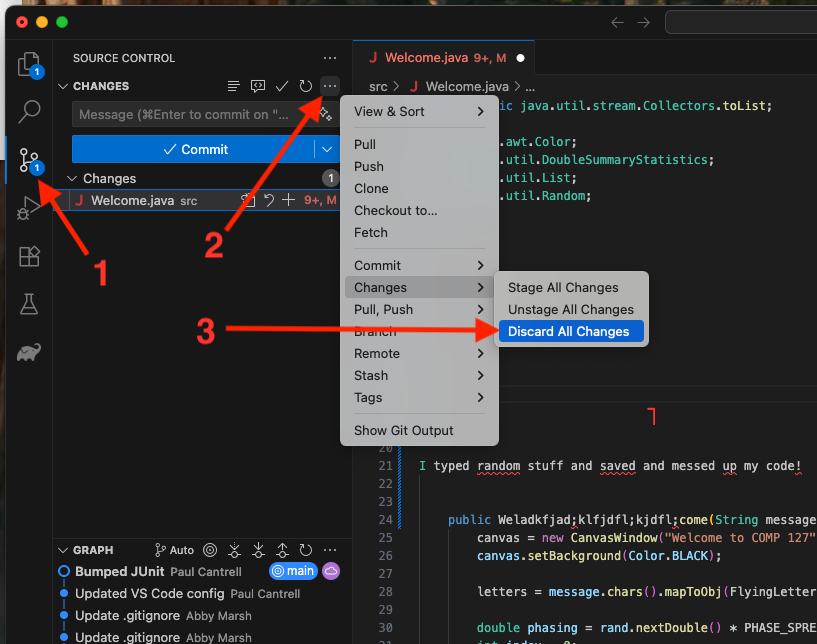

Let your instructor know that you have it working.
Now, play around with the code. Don’t have any idea what to do? No problem! Make little changes: maybe change the word “macalester” to something else, or change one of the numbers in the code. Run the code again to find out what the effect is. (Note: you have to close the window with the dancing letters before you can run the code again.)
If you get errors, you can always use ⌘-Z (Mac) / ctrl-Z (Windows) to undo and try something else. Experiment. See what you can discover. Be bold! You won’t break your computer by changing this code the wrong way. 😁
Not only will you not break your computer, you don't need to worry about undoing your changes, or being unable to go back to the original code you downloaded: git is a "version control system", which means it records all the changes made to the code. In particular, it remembers the exact state of the code you originally downloaded. So go ahead and mess with the code! You can delete things, add things, save it, type in garbage, and you will always be able to go back to the original state.
Navigate to the source control pane → the three-dots menu near the top → Changes → Discard All Changes. (However, because you never told git to remember your changes, after you do this, anything you have done will truly be lost.)
